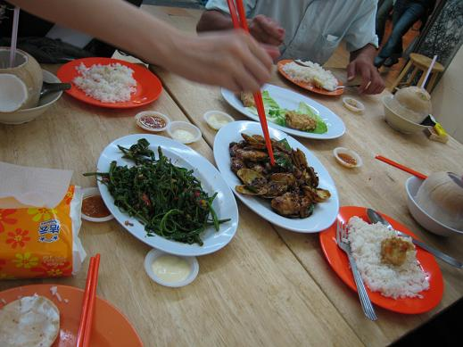
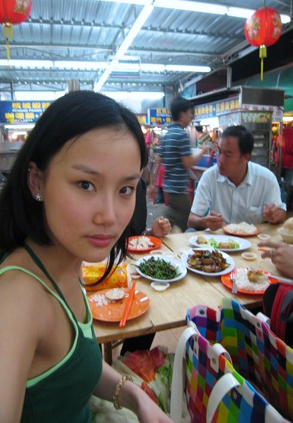

只不过在内地播的比较少,所以大家应该没怎么见到过,但是今天会推出新的广告,我很荣幸又一次成为美年达的形象代言人和大家见面,哈哈,不过这次更加是有BOBO组合和我一起拍摄这只电视广告,一定会得到更多女生的追捧,除了广告部分之外,我们还会一起为美年达唱一首广告歌曲,5月开始,我们会一起参加一系列的全国宣传巡演活动,很快就会和大家见面了,也会结合去年拍摄广告一起连环播出,到时候大家要关注一下哦
23号下午和BOBO一起抵达吉隆坡机场,到酒店试装之后我们就各忙各的了,哈哈
马来菜非常和我的口味,简直太好吃了,好感动

